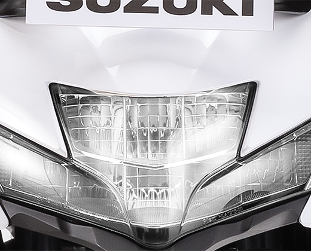
LED Headlamp
To complement the mass forward design of the motorcycle.
Never Lets Me Down
Fully-faired 250cc sport bike with Suzuki’s oil-cooled engine.
Ex-showroom Hyderabad from ₹1,94,870
The Gixxer SF 250 wraps Suzuki’s 249cc oil-cooled (SOCS) engine in full fairing. 26.5 PS at 9,300 rpm, 22.2 Nm and a 6-speed gearbox, with LED lighting and the Suzuki Easy Start System. Suzuki also lists a flex-fuel (E85) version of the SF 250.
Ex-showroom, Hyderabad (Telangana), as published by Suzuki Motorcycle India on 12 Nov 2026. On-road price adds registration, insurance and any accessories you choose.
Get the on-road price| Variant | Ex-showroom |
|---|---|
| Gixxer SF 250 (OBD-2B) | ₹1,94,870 |
| Gixxer SF 250 Special Edition (OBD-2B) | ₹1,95,328 |
| Gixxer SF 250 FFV | ₹1,99,989 |
Glass Sparkle Black / Metallic Oort Gray
Suzuki lists one colour range for both versions of this model. Ask us which colours are in stock for the Gixxer SF 250.
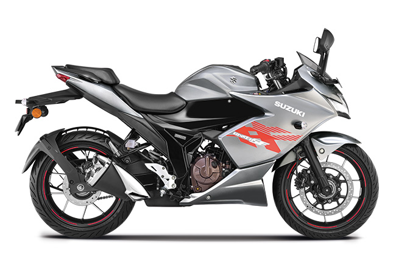

To complement the mass forward design of the motorcycle.
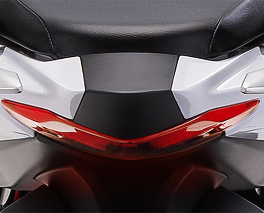
Styled LED tail lamp shares high resemblance to the original taillight design of GIXXER.
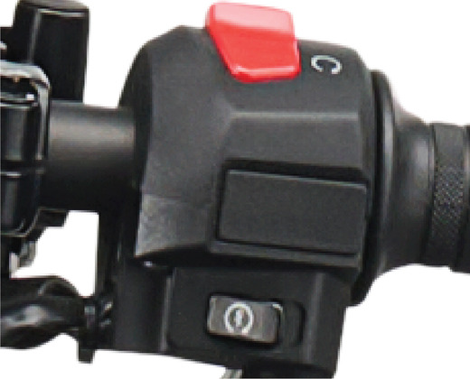
smoothens ease of starting the motorcycling thus resulting in stress free starting every time. The rider can easily start the engine by simply pulling the clutch and pressing the starter switch just one time.
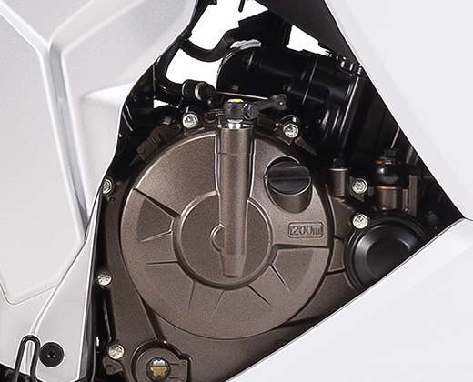
Suzuki oil cooling system (SOCS) – Oil cooling system in engine was first introduced by Suzuki to the world for creating lightweight and fast engines which provides high performance for a wide range of needs, from…
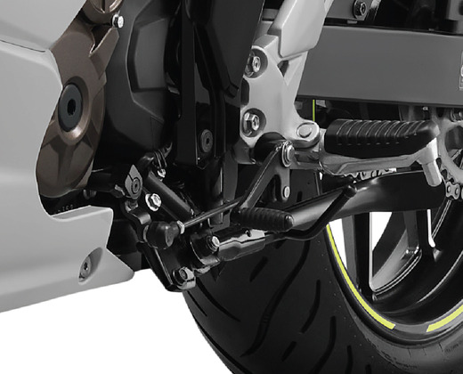
For extra relaxed cruising on long journeys without compromising on fuel…
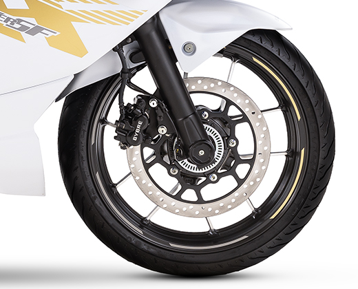
The motorcycle is equipped with a full-size 300 mm front disc brake that not only looks stylish but also delivers strong braking performance.
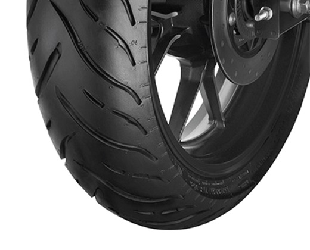
ensures excellent road grip and superior performance while riding on different road conditions. The wide tyre combination boosts your confidence while going fast around corners by providing superb stability.
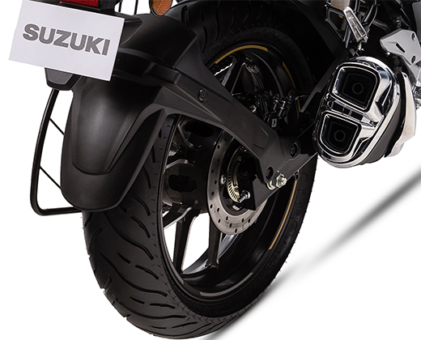
Equipped to the motorcycle which further accentuates the macho appeal of the motorcycle along with its rear wide tire.
Supplied and fitted at any Aarush Suzuki showroom. Ask about accessories
 DC Socket
DC Socket Seat Cover
Seat Cover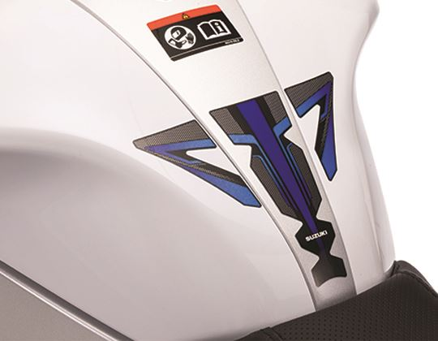
Tape Set Tank Pad Blue Tape Set Tank Pad Silver
Tape Set Tank Pad Silver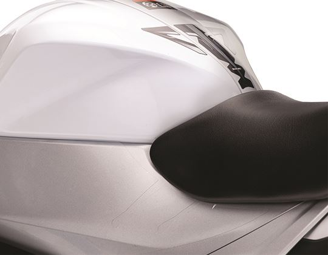
Tape Set Knee Grip Pad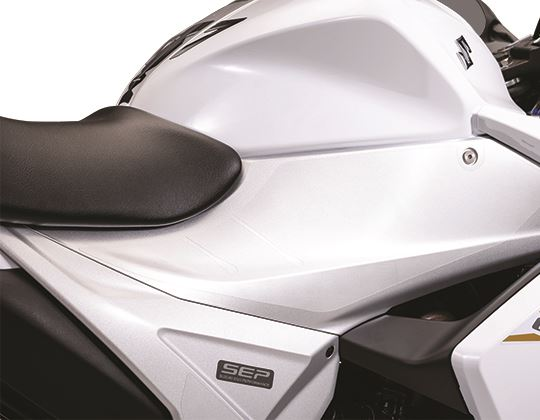
Tape Set Protection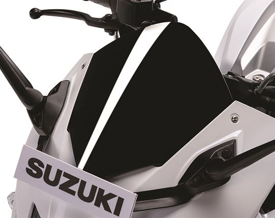
Meter VisorTechnical data as published by Suzuki Motorcycle India. Specifications can change without notice; our team will confirm details for the variant you choose.
Download Gixxer SF 250 FFV brochure (PDF)Download Gixxer SF 250 brochure (PDF) Official Gixxer SF 250 page| Engine Type | 4-Cycle, 1-cylinder, Oil cooled |
|---|---|
| Valve System | SOHC |
| Displacement | 249 cc |
| Bore x Stroke | 76 mm x 54.9 mm |
| Max Power | 26.5 PS @ 9,300 rpm |
| Max Torque | 22.2 Nm @ 7,300 rpm |
| Fuel System | Fuel Injection |
| Starter System | ELECTRIC |
| Transmission Type | 6 Speed, MT |
| Wheels | CAST |
|---|---|
| Overall Length | 2,010 mm |
| Overall Height | 1,035 mm |
| Ground Clearance | 165 mm |
| Seat Height | 800 mm |
| Fuel Tank Capacity | 12 L |
| Overall Width | 740 mm |
| Wheel Base | 1,345 mm |
| Kerb Mass | 161 kg |
| Front | Telescopic |
|---|---|
| Rear | Swing arm |
| Front | 110/70R17M/C 54S |
|---|---|
| Rear | 150/60R17M/C 66S |
| Front | Disc |
|---|---|
| Rear | Disc |
| Battery | Maintenance free, 12V 6Ah |
|---|---|
| Headlight | LED |
| Tail Light | LED |
Official Suzuki photography.
FAQs
Price, colours, specifications and test rides for the Gixxer SF 250 at Aarush Suzuki, answered from the details on this page.
Ask us on WhatsAppThe Suzuki Gixxer SF 250 costs ₹1,94,870 to ₹1,99,989 ex-showroom in Hyderabad across 3 variants as published by Suzuki Motorcycle India on 12 Nov 2026: Gixxer SF 250 (OBD-2B) ₹1,94,870; Gixxer SF 250 Special Edition (OBD-2B) ₹1,95,328; Gixxer SF 250 FFV ₹1,99,989. See the price table
The on-road price is the ex-showroom price (from ₹1,94,870) plus registration (RTO), insurance and any accessories you choose, so it depends on the variant and options. Aarush Suzuki sales will give you an exact quote: call 88852 46633 or ask on WhatsApp. Get the on-road price
Suzuki lists the Gixxer SF 250 in 4 colours: Glass Sparkle Black / Metallic Oort Gray; Glass Sparkle Black; Metallic Triton Blue / Pearl Glacier White; Metallic Triton Blue / Glass Sparkle Black. Ask us which colours are in stock. See the colours
The Suzuki Gixxer SF 250 has displacement 249 cc, max power 26.5 PS, max torque 22.2 Nm, kerb weight 161 kg, as published by Suzuki Motorcycle India. Full specifications
Book a test ride online, or visit any of Aarush Suzuki's 12 showrooms in Hyderabad and Telangana. Bring a valid driving licence; our team will call to confirm a time. Book a test ride
Visit any of our 12 showrooms, or tell us when suits you and we’ll have one ready.
Find us
Visit Aarush Suzuki
See our showrooms on the map, then choose the branch nearest to you for directions, a test ride or a service visit.